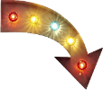

That Rob VK 
Oh that Rob VK!
Let's see, what do I put in my dating profile... I started coding when I was 9 years old and started my first coding job back in 2000. I dropped out of uni because I thought it was boring.I've done most of the tech jobs: developer, senior dev, tech lead, architect. On the non-tech side I've been a project manager, operations manager, engineering manager. I love creative problem solving, building visions of the future and collaborating to get there. It doesn't matter whether it's software, an org structure, processes, etc.
Oh and I'm loud, excitable, driven and wear shirts some (ok: most) would call awful. But other than that I'm generally pretty nice.
Currently I'm a public speaker for The Children's Society, I also speak on technical topics at various events, I'm studying business & management at The Open University and I'm a principal consultant at an amazing company called Infinity Works which includes consulting, commercial account leadership and being an advocate to support people's career growth.